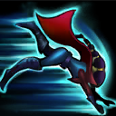

起手裝備
 長劍
長劍
海妖殺手起手、鬼索第二，接臨界點、殞落和雅瑪蘭；以連續普攻觸發多種命中效果，後段雙防取代幻影與預設復活。神聖銀箭真傷本身不吃穿甲。 長劍起手保留；五成裝與獨立二、三級鞋線已分開，未照抄外站 Galeforce 鞋附魔欄。


五件成裝與鞋子分開列示；起手與核心是購買路線，不是額外佔用的成裝欄位。鞋子完成時機仍依對線壓力與回城金錢調整。


保留致命節奏與血脈的連續普攻路線；斷切只增幅高血量目標的普攻部分，不把它寫成三環真傷放大器。


預設閃現＋鬼步，配合普攻命中特效與獨立的銀箭真傷維持輸出距離；自身位移仍要分段保留。選角時若對方爆發與控制過多，可把鬼步換光盾，連招不得假設同時擁有兩者。
加點優先：Q > W > E
Q > W > E：翻滾調位和強化普攻優先，二技次滿增加三環傷害；保留 15 級序列。
朝鄰近敵方英雄移動時提高跑速，讓汎更容易追擊與收割。

向指定方向翻滾並強化下一次普攻；大絕期間施放可短暫進入隱形。
有後續版本調整的項目以較新數值為準；未列出者不代表完整技能成長表。
連續三次攻擊或技能命中同一目標時，造成依目標最大生命計算的真實傷害；主動使用可提高攻速並回復部分造成的傷害。
有後續版本調整的項目以較新數值為準；未列出者不代表完整技能成長表。
以重弩擊退目標並造成物理傷害；若目標撞上牆體，會受到額外傷害並被暈眩。
暫時提高物攻並強化夜之狩獵與翻滾瞄準，使汎獲得更強的追擊、隱身與拉扯能力。
有後續版本調整的項目以較新數值為準；未列出者不代表完整技能成長表。
重查三環需同一目標、三技可疊銀箭與釘牆、開大翻滾短暫隱形；不再把釘牆後第三下普攻誤稱必定是首次三環。
普攻第一層 → 1技翻滾強化 → 普攻第二層 → 普攻觸發三環
先普攻後用翻滾瞄準重置站位與強化下一擊，再補第三下觸發神聖銀箭。敵方準備反打時不要勉強追第三層。
3技釘牆 → 4技強化 → 1技翻滾 → 強化普攻 → 持續追擊 → 繼續疊下一輪銀箭
確認重型弩箭能撞牆再出手，控制時間內開大並快速疊滿三環；若角度不穩，三技應保留用來擊退突進者。 三技命中也會疊銀箭，後續三環實際觸發點依原有層數變化，不固定在第三次普攻。
4技死亡通緝 → 1技隱身調位 → 普攻輸出 → 再次翻滾 → 持續風箏 → 3技擊退自保
大絕期間翻滾可短暫隱身，利用失去視野的瞬間改變走位方向；三技留到敵方突進貼近或能穩定釘牆時再使用。
汎射程短、推線慢，前期以補刀與血量管理優先。不要為了硬打神聖銀箭三環走進敵方雙人組的完整技能範圍；等對手交掉關鍵消耗或控制後，再用翻滾瞄準調整角度打一輪短換血。重型弩箭通常留給反突進，只有能穩定釘牆時才主動出手。
海妖殺手與鬼索成形後，集中同一目標打三環，臨界點提供普攻與命中特效所需雙穿及防禦；銀箭真傷不需要穿甲。鬼步配合大絕翻滾拉扯，殞落與雅瑪蘭再補長時間作戰。
開啟死亡通緝後，以翻滾隱形躲避關鍵技能並持續風箏，優先攻擊最近且安全的目標。神聖銀箭真實傷害能處理高生命前排，不需要冒險繞過坦克強切後排；每次翻滾都要同時考慮下一個安全位置。
尤娜拉與法洛士的攻擊窗口較長，史矛德可以技能消耗並清線；不要為第三環一直向前追，等輔助控制或對手技能空窗再換血。 威脅名單採同分路指南，較有利名單保留機制判斷並移除與威脅名單重疊者；現有輔助組合逐項複核技能互動後保留。
對局名單是機制與分路判斷，不代表固定勝率；需同時看雙方熟練度、兵線與陣容。
尤娜拉與法洛士的攻擊窗口較長，史矛德可以技能消耗並清線；不要為第三環一直向前追，等輔助控制或對手技能空窗再換血。
下列輔助配合以技能互動為依據。露璐、米里歐、索拉卡仍可配合本頁打法；先確認對手輔助的控制與兩邊召喚師技能，單一射手對局不代表必勝。
護盾、加速與變形能幫汎撐過短射程前期，後期單點保護也很完整。
增程與解控能降低汎進場輸出的風險，讓她更容易持續打出三環。
長時間治療與沉默能幫汎延長拉扯，適合穩定發育與反打。
依汎的普攻命中特效與獨立的銀箭真傷路線選擇替換；先看實際死亡與傷害不足原因。
依敵方前排成形調整
觸發：敵方前排已形成高生命或高防禦，正面輸出受阻。
汎保留前述五成裝加獨立鞋線；同一格不同情境擇一替換，不全部加購。
臨界點已提供物理與魔法穿透；不用另一件百分比穿甲硬疊。銀箭真傷不受穿甲增幅。
保命格可提早
觸發：被同一輪突進秒殺，無法打出主要技能與普攻。
雅瑪蘭守護像 → 守護天使
主要死亡原因是刺客或突進一次切入，且隊友能掩護復活位置。
雅瑪蘭守護像整格換守護天使，犧牲部分普攻命中特效與獨立的銀箭真傷或持續防禦；復活後無人接應時先改善站位。
雅瑪蘭守護像 → 魔提斯深淵
敵方主要擊殺來源是魔法爆發，且尚未裝另一件生命線裝備。
以雅瑪蘭守護像換魔提斯處理魔法爆發；不把魔防誤當通用抗物理方案。
復活與魔法生命線處理的傷害不同，按實際威脅擇一；盾弓與魔提斯不重複保留。
先判斷控制能否解除
觸發：可解除的禁錮、暈眩等控制反覆中斷輸出。
雅瑪蘭守護像 → 水星彎刀
可解除的控制反覆讓自己無法輸出，且閃現不能解決。
以雅瑪蘭守護像換水星彎刀；主動要手動使用，不能解除擊飛或擊退，也不是舊版附魔。
水星彎刀是成裝，不佔鞋子升級；擊飛、擊退須靠預先走位或隊友保護。
治療已影響集火時
觸發：敵方持續治療抵銷集火，且團隊缺乏穩定重創。
臨界點 → 致死宣告
敵方持續治療難以處理，而且隊友無法負責重創。
整格替換臨界點，會失去魔穿、攻速與疊層雙防；先考慮由隊友補重創，不把此替換視為無代價。
需要時先用死刑宣告過渡；不要把所有敵方英雄都當成必出重創的理由。
團隊無其他反盾者才承擔
觸發：大量反覆護盾持續阻止集火，且自己能穩定命中目標。
雅瑪蘭守護像 → 巨蛇鋒牙
隊友無法施加反盾，且護盾確實抵銷主要輸出。
雅瑪蘭守護像換巨蛇鋒牙會犧牲原末段功能；汎仍需保留主要輸出核心，只有單一小護盾時不換。
反盾屬團隊分工，不為一個小盾放棄整條普攻或技能路線。
7.3d差異核對：本頁核對官方英雄／裝備差異與現行配置參照；未列的技能不表示已完成逐級實測。查看校正範圍。
本頁校正版本：7.3d；校正日期：2026-10-25。
參考來源標示版本：7.3c
本輪核對官方版本差異、道具/符文引用、五成裝與鞋線、逐級加點及情境替換一致性。Tier及玩法屬本站編輯判斷，不是官方排名或台服勝率；未公開的全級技能表不推算。
評級理由：7.3c 維持 A（本站判斷）。依同分路參考由 S 調為 A；三環對坦克仍有效，但射程和清線不足讓發育更仰賴對線環境。 7.3c 未改動此分路的英雄數值，沒有新證據只因版本號而升降。
Riot 官方資料 ↗ · Riot 官方資料 ↗ · Riot 官方資料 ↗ · Riot 官方資料 ↗ · Riot 官方資料 ↗ · WildRiftFire 參考攻略 ↗
7.3c 的直接英雄倍率改動屬符文大亂鬥；本召喚峽谷配置承接 7.3b。未把模式專屬增削轉為峽谷增削。
五件成裝、獨立鞋線、起手、核心、情境替換引用與一般符文列別均重新檢查；移除裝備不列入當前推薦。
歷史資料有後續調整時，以較新版本數值為準。
| 項目 | 調整前 | 調整後 |
|---|---|---|
| 基礎物攻 | 54 | 60 |
| 項目 | 調整前 | 調整後 |
|---|---|---|
| 傷害 | 35 / 45 / 55 / 65%物攻 | 50 / 60 / 70 / 80%物攻 |
| 項目 | 調整前 | 調整後 |
|---|---|---|
| 取決於最大生命的真實傷害 | 2 / 5 / 8 / 11% | 6 / 7 / 8 / 9% |
| 項目 | 調整前 | 調整後 |
|---|---|---|
| 物攻 | 15 / 25 / 35 | 30 / 40 / 50 |